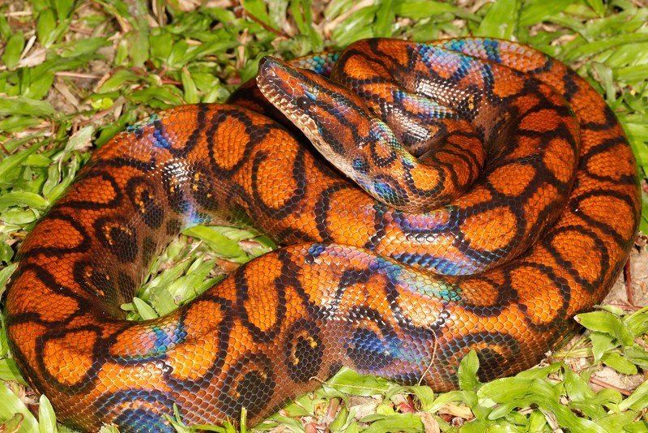
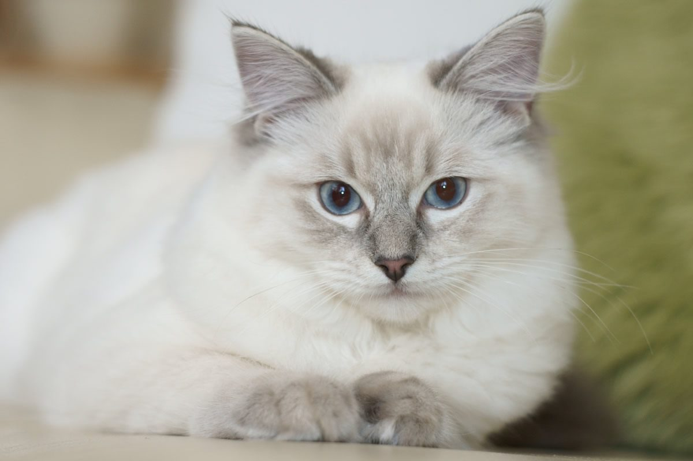
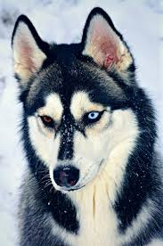
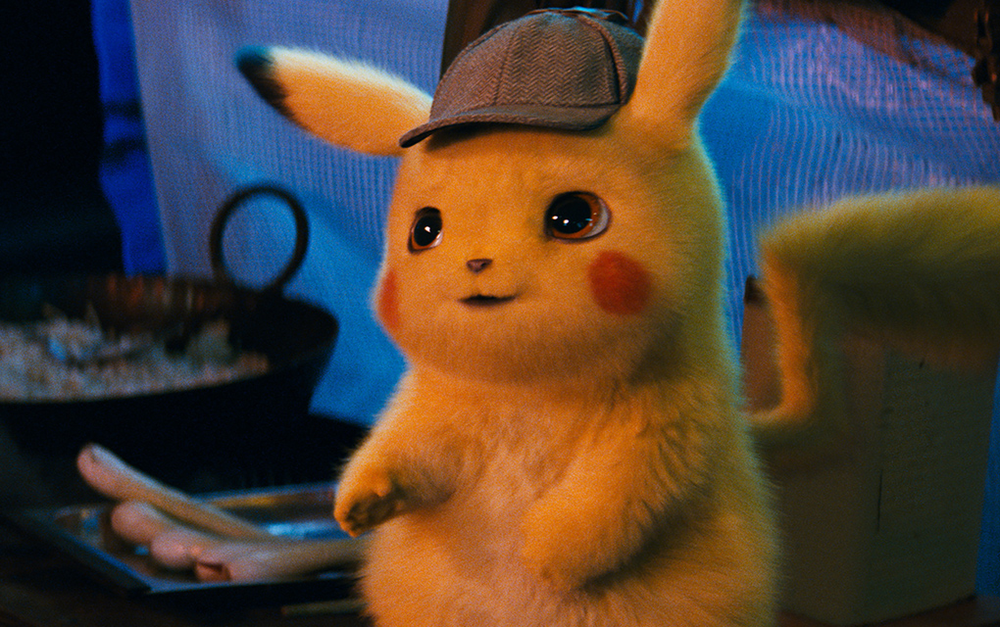
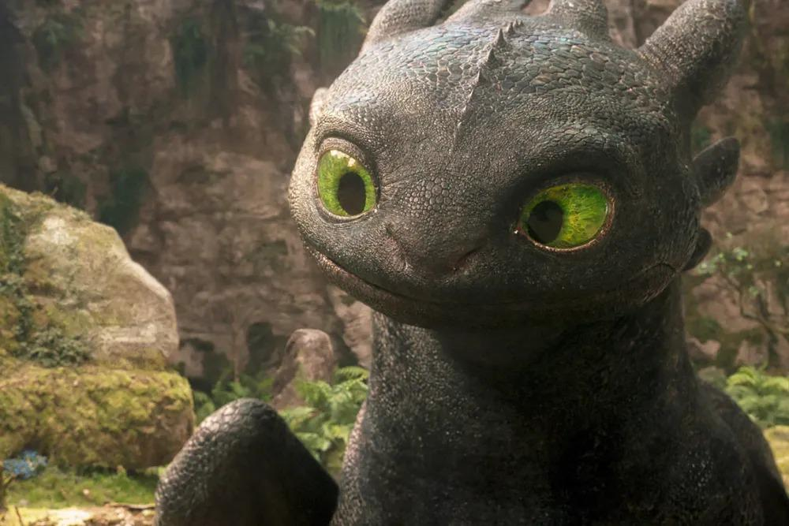

Orochimaru
Esta es mi serpiente orochimaru, tiene 3 años de edad. Lo que mas me gusta de ella es lo bonita que es, su color iridiscente es lo que mas destaca

Esta es mi serpiente orochimaru, tiene 3 años de edad. Lo que mas me gusta de ella es lo bonita que es, su color iridiscente es lo que mas destaca

Oliver tiene 4 años, es super amigable y requiere de cuidados para mantener su pelaje

Este es el mas juguetón de la casa, pero tambien el que da seguridad! Está domesticado y es muy inteligente

Ted es un oso de peluche con vida propia, famoso por su personalidad irreverente, sarcástica y su lealtad incondicional.

Pikachu es un ratón eléctrico amarillo, leal y enérgico, que almacena electricidad en sus mejillas rojas para lanzar potentes ataques.

Chimuelo es un dragón Furia Nocturna de piel negra y gran inteligencia, que destaca por su velocidad extrema y sus poderosos disparos de plasma.